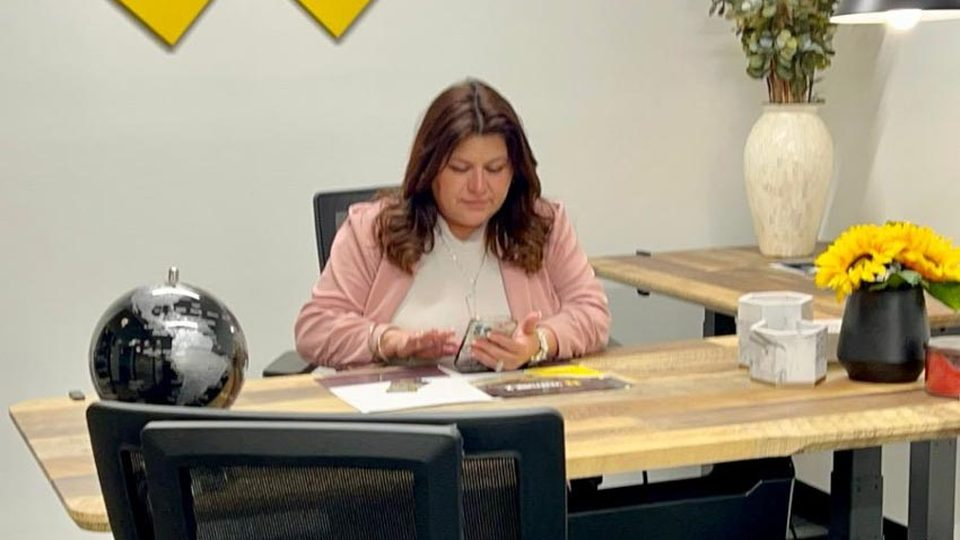

Move forward with a
clearer financial strategy.
InterCredit helps you understand what is affecting your credit, navigate debt challenges, protect your financial profile, and choose a path built around your goals.
No one-size-fits-all plan. Start with your situation, your goals, and a clear conversation about your options.
In-Person & Remote Consultations
Confidential analysis of credit profiles & tradelines
Decades of Credit Leadership
Dedicated background helping clients navigate complex credit situations.
Client Reviews & Transparency
Verified satisfaction, clear communication, and dedicated advisory support.
Featured on Univision Despierta América
Financial and credit expertise presented live on national television.
20-Minute Structured Consultation
A focused session to understand your goal and discuss viable next steps.
What are you trying to solve?
You do not need to know the official name of the service you need. Choose the situation that sounds closest to yours and explore the most relevant options.
Not sure where you fit?
Our advisors can evaluate your situation in an introductory call and point you in the right direction.
Book a ConsultationImprove My Credit
Understand what may be affecting your credit profile and explore a personalized strategy for addressing eligible issues and building stronger habits.

Resolve My Debt
Review debt and collection challenges, understand what may be negotiable, and discuss the options that fit your situation.
Protect & Understand My Credit
Get more clarity around your credit report, monitoring, fraud concerns, and the information that can affect your financial profile.
Build Credit in the U.S.
Navigate the U.S. credit system with guidance designed for international investors and people establishing a U.S. credit profile.
Good financial guidance starts with understanding the full picture.
Credit and debt challenges rarely come from one isolated issue. InterCredit starts by understanding your goals, reviewing the situation, and identifying the options that are most relevant to you.

Every tradeline, balance ratio, and inquiry audited prior to drafting actions.
Review
We start with your goal, the context behind it, and the information that may be influencing your credit or debt situation across relevant reporting bureaus.
Strategy
We identify the services or actions that may apply and explain how they fit together into an actionable, realistic plan.
Guidance
You move forward knowing what the next step is, what to expect, and where InterCredit can support you with consistent progress reporting.
No generic package. No promise of a specific score. A clearer strategy based on your situation.
Your next step depends on where you are today.
Not every client follows the same route. Think of these five stages as a continuous trajectory of capabilities InterCredit can bring together around your needs.
01. Understand
Review goals, context, and credit reports before deciding what to address.
02. Correct
Identify eligible inaccurate or outdated records needing review.
03. Resolve
Explore options for eligible debt and collection account negotiation.
04. Protect
Active monitoring, fraud alert tools, and financial literacy habits.
05. Grow
Build stronger credit history to support future financing needs.
Your path may begin at any stage. Scope and outcomes are tailored to your specific situation.
Credit guidance should be backed by more than promises.
InterCredit combines hands-on client work with public financial education and a personalized approach to credit and debt challenges.

Jessica Sotolongo has shared credit guidance with national Spanish-language audiences.
Univision has featured Jessica in segments covering credit myths, credit reports, rebuilding credit, and financial decisions for families and businesses.
A broader set of solutions, organized around what you actually need.
Explore all 9 core services across our 4 primary chapters. Review eligible scenario scope and discuss the appropriate pathway during your consultation.
Improve My Credit Services
Comprehensive audit of credit bureau files across Experian, Equifax, and TransUnion. We develop a personalized strategy targeting inaccurate, incomplete, or unverifiable tradelines in accordance with federal consumer reporting standards.
Direct assistance reconciling outdated personal records, mismatched names, obsolete addresses, and misattributed demographic items that cause file fragmentation and underwriting friction.
Strategic recommendations on tradeline seasoning, authorized user structures, and utilization pacing to foster positive credit depth over sustainable reporting cycles.
Resolve My Debt Services
Objective review of unsecured debt balances with creditors. We assess hardship viability, statute of limitations windows, and formal settlement structures to reduce balance pressures.
Systematic debt validation and settlement with third-party collection agencies, ensuring proper satisfaction reporting and documentation following finalized agreements.
Advisory guidance for small business owners separating personal guarantees from commercial tradelines and structuring clean vendor credit lines.
Protection & Global Investor Services
Continuous surveillance tools to track inquiry volume, sudden balance spikes, and suspected identity theft. Assistance filing formal FTC affidavits and security freezes when necessary.
Specialized architecture for international investors and foreign nationals relocating to the United States. We create a step-by-step roadmap to establish ITIN/SSN creditworthiness, secure commercial financing, and navigate domestic bank underwriting.

Jessica Sotolongo, Founder & CEO
Miami Advisory Office • Executive Session
Financial guidance is better when you know who is behind it.
The first step is understanding what is actually holding you back — then building a strategy around your situation, not someone else’s.
Jessica Sotolongo
Founder & CEO, InterCredit Solution
Jessica leads InterCredit with a focus on helping clients better understand credit, debt, and the decisions that affect their financial profile. Her approach combines personalized guidance with practical financial education.
Having shared credit guidance with national audiences on Univision’s Despierta América, Jessica emphasizes that legitimate credit progress comes from understanding federal consumer rights, accurate reporting, and disciplined financial planning.
See what clients say about working with InterCredit.
The most useful proof is not an empty guarantee. It is hearing how real clients describe the experience, communication, and support they received.

Client story 01
Watch on YouTubeA 20-minute conversation can help clarify your next move.
You do not need to arrive knowing which service you need. Start with what you are trying to solve.
Tell us your goal
Share what is happening, what you are concerned about, and what you would like to improve or understand.
Review the situation
An InterCredit advisor reviews the relevant context and asks the questions needed to understand your case.
Understand your options
You leave with a clearer understanding of the possible next steps and where InterCredit may be able to help.
*Exact recommendations, timing, fees, and service scope depend on your individual situation.
Frequently Asked Questions
Have questions about working with InterCredit? We believe in absolute transparency before you decide on any next step.
Speak with an AdvisorWhat happens during the initial consultation?
We review your situation, discuss your goals, and explain the possible next steps that may apply. The purpose is to help you understand the process before deciding how to move forward.
How long does it take to see results?
Timelines vary depending on the service, complexity of the situation, third parties involved, and other individual factors. InterCredit does not promise a specific credit-score increase or fixed timeline.
How much do your services cost?
Fees vary depending on the service and complexity of the situation. All costs are explained thoroughly before you make any commitment to a service.
Do you offer payment plans?
Payment plan options may be available depending on the service program. You can confirm current terms and eligibility directly with an advisor during your initial consultation.
Do I need to know which service I need before booking?
No. Start with your goal and situation. The 20-minute consultation is specifically designed to help clarify which options are relevant.
Can InterCredit guarantee that my credit score will increase?
No specific score increase, approval, deletion, settlement, or timeline should ever be guaranteed. Results depend on the facts of the individual case and other factors outside InterCredit's control.
Can InterCredit help foreign investors establish U.S. credit?
Yes. InterCredit offers specialized guidance specifically for international investors seeking assistance with establishing and structuring a U.S. credit profile.
Start with a conversation about where you are and what comes next.
You do not need to diagnose your own credit situation or choose a service before you call. Tell us your goal, ask your questions, and understand the options that may fit your situation.
Personalized guidance. Clear expectations. No guaranteed-score promises.